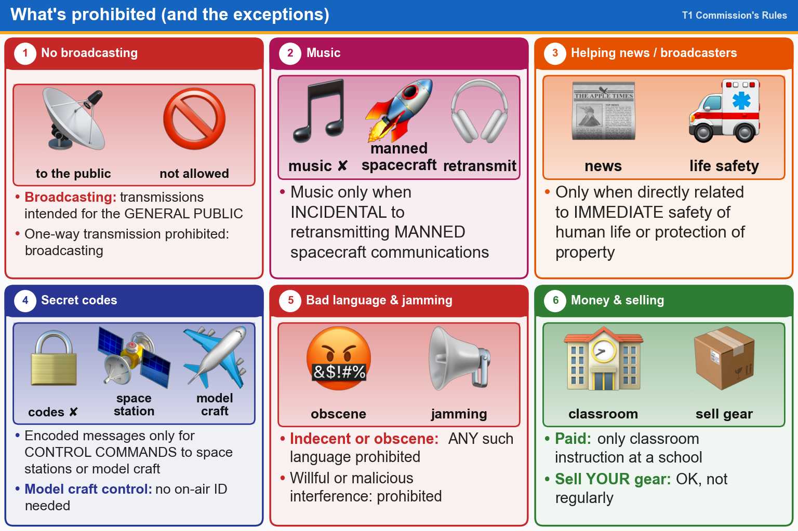

💡 No broadcasting, music, codes or bad words, but learn the exceptions: ISS audio, model craft, safety of life.
📚 Key words
- Broadcasting
- Transmitting to the general public, like a radio station. Not allowed for hams.
- One-way transmission
- Sending without expecting an answer. Broadcasting is the banned kind.
- Incidental
- Happening by accident along with something allowed, like music in the background of a retransmitted astronaut talk.
- Manned spacecraft
- A spacecraft with people aboard, like the ISS.
- Encoded / obscure
- Secret codes that hide meaning. Only allowed for control commands to space stations or model craft.
- Willful interference
- Jamming others on purpose. Always banned. So is indecent or obscene language.
- Compensation
- Getting paid. Only OK in special cases, like teaching a class at a school.
Press Check on any question to see if you're right (it won't show the answer), or Grade at the bottom to grade the whole page.
T1D10[97.3(a)(10)]
How does the FCC define broadcasting for the Amateur Radio Service?
✔A.Transmissions intended for reception by the general public
✘B.Transmission of messages directed only to amateur operators
✘C.Any transmission made by the licensed station
✘D.Two-way transmissions by amateur stations
T1D02[97.113(b), 97.111(b)]
Under which of the following circumstances are one-way transmissions by an amateur station prohibited?
✘A.Telecommand or transmissions of telemetry
✘B.International Morse Code Practice
✘C.Announcements of upcoming ham radio operating events
✔D.Broadcasting
T1D04[97.113(a)(4), 97.113(c)]
Under what conditions is an amateur station authorized to transmit music using a phone emission?
✘A.When transmissions are limited to less than three minutes per hour
✔B.When incidental to an authorized retransmission of manned spacecraft communications
✘C.When the music is transmitted above 1280 MHz
✘D.When the music produces no spurious emissions
T1D09[97.113(5)(b)]
When may amateur stations transmit information in support of broadcasting, program production, or news gathering, assuming no other means is available?
✘A.Never
✔B.When such communications are directly related to the immediate safety of human life or protection of property
✘C.When broadcasting communications to or from the space shuttle
✘D.Where non-commercial programming is gathered and supplied exclusively to the National Public Radio network
T1D03[97.211(b), 97.215(b), 97.113(a)(4)]
When is it permissible to transmit messages encoded to obscure their meaning?
✔A.Only when transmitting control commands to space stations or model craft
✘B.Only when using a remote station during a contest
✘C.Only when transmitting certain approved digital codes
✘D.Never
T1D06[97.113(a)(4)]
What, if any, are the restrictions concerning transmission of language that may be considered indecent or obscene?
✔A.Any such language is prohibited
✘B.There is no such prohibition
✘C.The International Telecommunications Union (ITU) maintains a list of words that are not permitted to be used on amateur frequencies
✘D.The FCC maintains a list of words that are not permitted to be used on amateur frequencies
T1A11[97.101(d)]
Which of the following is prohibited?
✔A.Willful or malicious interference
✘B.International communications on VHF bands and higher frequencies
✘C.Third-party traffic using digital modes
✘D.All these choices are correct
T1D08[97.113(a)(3)(iii)]
In which of the following circumstances may the control operator of an amateur station receive compensation for operating that station?
✘A.When the communication is made to obtain emergency information for a local broadcast station
✘B.When the communication is related to the sale of amateur equipment by the control operator's employer
✔C.When the communication is a part of classroom instruction at an educational institution
✘D.All these choices are correct
T1D05[97.113(a)(3)(ii)]
When may amateur radio operators use their stations to notify other amateurs of the availability of equipment for sale or trade?
✘A.Never
✔B.When selling amateur radio equipment and not on a regular basis
✘C.When no profit is made on the sale
✘D.When the equipment is not the personal property of either the station licensee, or the control operator, or their close relatives